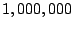

Coordination protocol and components have to share data. We use ATerms [8] for this purpose. These are trees with optional annotations on each node. The annotations are used to store tool-specific information like text coordinates or color attributes. The implementation of ATerms has two essential properties: terms are stored using maximal subterm sharing (reducing memory requirements and making deep equality tests very efficient) and they can be exchanged using a very dense binary encoding that preserves sharing. As a result very large terms (with over  nodes) can be processed.